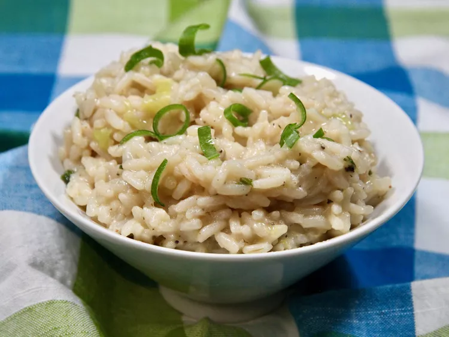

allrecipes
Very Easy Risotto
This easy risotto is made with green onion and Parmesan cheese.
This rice dish
is fast and doesn't require constant stirring!
Submitted by Kim Sanchez | Updated on July 17, 2023

Ingredients
- 2 tablespoons butter
- ⅔ cup sliced green onion
- 1 ⅓ cups uncooked long-grain rice
- 4 cups water
- 1 teaspoon chicken bouillon granules
- ¼ teaspoon ground black pepper
- ¾ cup grated Parmesan cheese